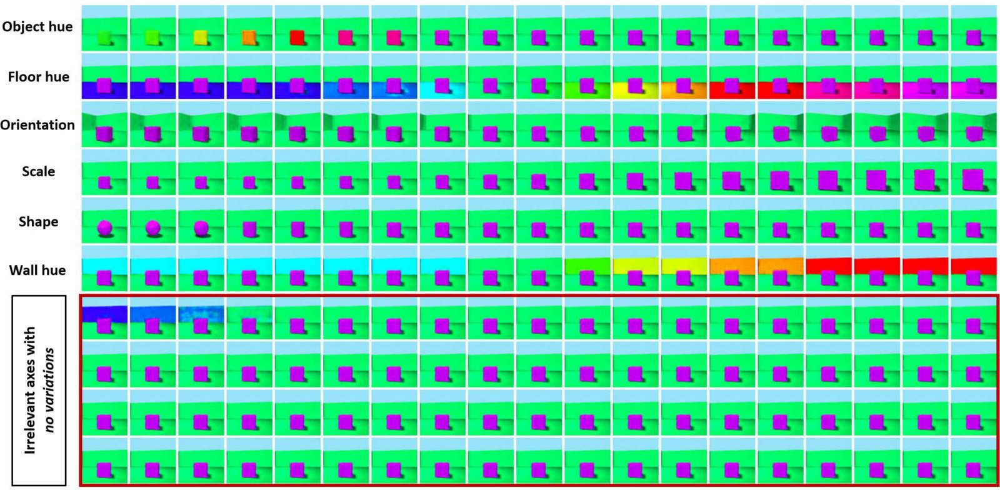

ARD-VAE: A Statistical Formulation to Find the Relevant Latent Dimensions of Variational Autoencoders
In short: instead of tuning the size of a VAE's bottleneck by trial and error, ARD-VAE starts with a generous latent size and lets a data-driven hierarchical prior shrink the unnecessary axes. The relevant dimensions can be read off after training. Only the prior changes; the ELBO, the architecture and the training recipe stay the same.

The problem
A standard VAE uses a fixed isotropic prior N(0, I), which forces every latent axis to unit variance. The number of latent dimensions therefore has to be chosen by hand. If it is too small, the model underfits. If it is too large, the extra axes waste capacity and hurt generation quality. Existing remedies rely on trainable masks or L0 penalties, which are sensitive to architecture and optimization settings.
Approach
- Relevance-aware hierarchical prior. Each latent axis gets its own precision with a Gamma hyperprior, the classic automatic relevance determination (ARD) construction. Marginalizing the precision gives a heavy-tailed Student's-t prior that concentrates mass near zero, which drives unused axes to collapse.
- Hyperprior estimated from data. Because the Gamma distribution is conjugate to the Gaussian, the posterior over each axis's precision has a closed form that is refreshed from the latest encoded samples during training.
- Closed-form KL, unchanged ELBO. With enough samples, the prior is well approximated by a Gaussian with a learned per-axis variance, so the KL term stays analytic. Nothing else in the VAE objective changes.
- Reading off relevance. Collapsed axes keep a small but non-zero variance, so ARD-VAE sharpens the estimate by weighting each axis's variance by the decoder's sensitivity to it (the mean squared Jacobian), then keeps the axes that carry most of the total relevance.
Results
All methods are trained five times per dataset; the tables report means.
Disentanglement on synthetic data with 6 known factors
| Method | DSprites FactorVAE ↑ | MIG ↑ | Active | 3D Shapes FactorVAE ↑ | MIG ↑ | Active |
|---|---|---|---|---|---|---|
| VAE (L=6) | 64.78 | 0.06 | 6.0 | 55.85 | 0.13 | 6.0 |
| β-TCVAE (L=6) | 75.55 | 0.20 | 6.0 | 75.51 | 0.40 | 6.0 |
| DIP-VAE-II (L=6) | 60.70 | 0.08 | 6.0 | 63.66 | 0.24 | 6.0 |
| RAE (L=6) | 64.21 | 0.04 | 6.0 | 53.57 | 0.03 | 6.0 |
| ARD-VAE (L=10) | 63.37 | 0.22 | 5.8 | 79.26 | 0.52 | 6.4 |
Selected baselines shown; full tables are in the paper. Competing methods are given the true factor count (L=6), an advantage unavailable in practice. ARD-VAE starts from L=10 and finds the count itself, with the best MIG on both datasets.
Generative quality
| Method | MNIST Active | FID ↓ | Recall ↑ | CIFAR-10 Active | FID ↓ | Precision ↑ | Recall ↑ |
|---|---|---|---|---|---|---|---|
| VAE | 16 | 28.78 | 0.97 | 128 | 147.74 | 0.50 | 0.47 |
| RAE | 16 | 18.79 | 0.95 | 128 | 94.34 | 0.74 | 0.47 |
| WAE | 16 | 25.42 | 0.92 | 128 | 140.49 | 0.42 | 0.31 |
| GECO-L0-ARM-VAE | 10.0 | 304.75 | 0.38 | 68.0 | 320.75 | 0.02 | 0.04 |
| MaskAAE | 9.8 | 144.92 | 0.07 | 3.8 | 298.30 | 0.07 | 0.04 |
| ARD-VAE | 12.8 | 22.24 | 0.98 | 105.8 | 87.56 | 0.82 | 0.51 |
Selected baselines shown. Mask- and gating-based methods collapse or diverge on the shared architecture, while ARD-VAE uses fewer dimensions than its nominal size and gives the best CIFAR-10 FID, precision and recall.
Robust to the starting size
Doubling or quadrupling the initial latent size barely changes the discovered count or the FID (MNIST: 12.6 vs 12.4 active dimensions; CIFAR-10: 116.4 vs 117.8), so the latent size no longer needs careful tuning.
Citation
@inproceedings{saha2025ardvae,
title = {ARD-VAE: A Statistical Formulation to Find the Relevant
Latent Dimensions of Variational Autoencoders},
author = {Saha, Surojit and Joshi, Sarang and Whitaker, Ross},
booktitle = {IEEE/CVF Winter Conference on Applications of
Computer Vision (WACV)},
year = {2025},
doi = {10.1109/WACV61041.2025.00096}
}